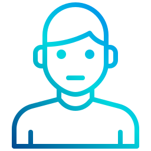
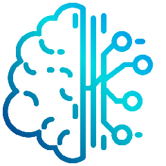
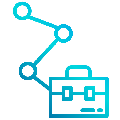

 Quem sou e meu interesse por tecnologia
Com o lançamento da minha primeira versão (nascimento) em 30 de agosto de 1988 tomei forma e me mantenho armazenado até hoje na Cidade Tiradentes - Zona Leste de São Paulo, projetado e desenvolvido por Alvino - Mecânico de Manutenção de Máquinas em geral - e Ildacil - Diarista - tornei-me consciente do meu interesse por tecnologia ainda muito novo, ainda na versão 6.0. Sempre fascinado com filmes de ficção como Star Wars, Star Trek, Stargate, De volta para o futuro, Hacker - Piratas de computador, entre outros inúmeros clássicos. Também ficava entusiasmado quando frequentava a casa de minha madrinha aos domingos e visualizava meu primo trabalhando com computadores, na época não detinha conhecimento sobre nada do que ele estava fazendo, mas ao ver desmontando e montando, digitando códigos no terminal do MS-DOS e as coisas funcionando, aquilo me chamava muito a atenção.
Mais tarde, já na minha versão 12 (anos de idade), juntamente com um amigo da escola pressionei o start de minhas aventuras por esse mundo da tecnologia, iniciando obviamente pelo básico, utilizava o pouco tempo que tinha acesso a rede para fazer algumas pesquisas na internet, com a conexão ultrarrápida e limitada da internet discada através de um fax modem de 56kbps e o software de discagem do IG (Com aquele White Terrier branco e super fofo), Ibest ou mesmo o discador do próprio Windows, onde tínhamos de esperar o final de semana ou até meia noite para poder conectar sem que meu pai precisa-se vender meu rim para pagar a conta de telefone no final do mês.
Depois de ouvir muitas broncas e quase ser deletado desse mundo por fuçar no computador do meu pai, passei a fazer manutenção no computador de amigos, a princípio gratuitamente para poder obter experiência, e treinar minha paciência quando precisava baixar alguns drivers. Já que naquela época as opções que tínhamos eram comprar CD's com centenas de drivers na Rua Santa Ifigênia e que normalmente nenhum funcionava, ou baixar os drivers específicos da internet, para minha salvação conheci rapidamentoe o DriverGuide, site que me salvou inúmeras vezes.
 Play nos cursos livres
CENIG Cursos - Informática Básica
Apesar de aprender muito com a ajuda da internet, e com a curiosidade, um aprendizado guiado seria muito mais fácil, prático e eficiente, então meu pai me matriculou no curso de Informática Básica da extinga CENIG Cursos localizada em Guaianazes. Na grade do curso havia Windows ME, Microsoft Office 2000, Digitação e Técnicas Administrativas. O curso se dividia em duas aulas por semana, cada aula com duração de uma hora, em uma aula seria apenas treinamento de digitação, na aula seguinte downloads de conhecimento. Entretanto a empolgação era tanta que a professora me permitia passar a tarde toda lá treinando digitação e vendo novos conteúdos na internet, já que em casa o acesso era limitado.
Telecentro Guaianazes
Ao finalizar o curso de informática básica não tinha mais acesso livre a grande rede mundial, até que recebi uma atualização muito interessante, com a informação sobre um serviço de acesso gratuito a internet fornecido pelo governo, o então chamado de Telecentro com o programa Acessa São Paulo, passei a frequentar algumas vezes pois era longe de onde fico alocado.
Nessa época já estava em meu radar o então "rival" do famoso Windows, um sistema operacional livre chamado Linux, e apesar de ter feito alguns testes, não possuia um conhecimento mais aprofundado. Nda internet o conteúdo em português era escasso, no meu banco de dados cerebral as informações sobre inglês eram igual a NULL (nulas), e naquela época não existiam serviços de tradução como o Google Translate. Para minha alegria o telecentro abriu vagas para um curso introdutório a Linux, e claro que eu não poderia perder a oportunidade e rapidamente fiz minha inscrição.
Um curso rápido de apenas 20 horas, mas suficiente para entender mais sobre esse sistema tão diferente do que eu estava acostumado, e que até então não tinha nada de plug and play. Mas aprendi muito para a época e assim passei a ter uma nova visão do sistema operacional Linux e dos softwares livres.
Obra Social Dom Bosco - CFC
Inicializando Dom_Bosco.cfc
Atualização após atualização e eu já estava em minha versõa 14.0, minha mãe tomou ciência de uma instituição que oferecia cursos gratuítos de recreação para crianças e adolecentes. Rapidamente realizou a minha matrícula, e com essa nova rotina em minha agenda de tarefas, após as aulas, eu teria de substituir minha rotina de assistir TV por fazer novas amizades e atividades recreativas.
Ao iniciar no Dom Bosco, descobri que as atividades se dividiam em dois períodos, onde deveria escolher uma atividade física e uma intelectual, por ter sido inserido após a inicialização das atividades, as minhas opções eram limitadas, e por isso foi alocado na equipe de volei na atividade física, e onde permaneci durante um ano, mesmo não sendo um dos melhores jogadores, mas também não sendo o pior. Ja na atividade intelectual fiz parte da turma de música por seis meses, e no semestre seguinte fui para a turma de Datilografia.
Apesar ter feito previamente o curso de digitação, no curso de datilografia aperfeiçoei e aumentei de forma exponencial a minha capacidade de digitar, e de me adapitar a novas configurações e tipos de teclados.
Obra Social Dom Bosco - Profissionalizante
Informática Básica
Após executar minhas atividades de recreação no CFC por um ano, estava na hora de um Upgrade, então migrei para os cursos profissionalizantes, iniciando novamente no curso de informática básica, acabei passando uma grande parte do tempo como um "auxiliar" da professora Fabi (Carinhosadamente chamada de Figurrinha da Estrela), pois detinha o conhecimento da maior parte do conteúdo que estava sendo ministrado, e por esse motivo ajudava os colegas que não possuiam o mesmo conhecimento e facilidade de aprendizado.
Manutenção e Montagem de Computadores
Passando do básico, foi hora de aprimorar os conhecimentos na área de manutenção, então jutamente com meu amigo começamos a fazer o curso de montagem e manutenção de computadores com o grande professor Valmir (Apelidado carinhosamente é claro, de Professor Leoncio, por causa de seu bigodão), com grande entusiámos passavamos as noites e finais de semana fazendo exercícios de conversão de base (Decimal, Octal, Exadecimal e Binários), achavamos incrível, mas sabiamos que raramente usariamos isso no futuro.
Mas passando a fase de conversão e teoria, fomos para a parte prática, que sinceramente, era a qual mais nos interesserava, novamente por já deter um certo conhecimento prévio do conteúdo, acabavamos auxiliando o professor com os colegas que tinham dificuldades.
Escolas Profissionais Salesianas
Técnicas Adminsitrativas
Ops!!! Houve falha na conexão de rede, então fui redirecionado para a Escolas Profissionais Salesianas, pertencente ao mesmo grupo de obras sociais Dom Bosco. Mas desta vez iria precisaria trafegar por uma rede um pouco mais longa até chegar no curso, pois teria de ir até o bairro da Mooca para poder participar do curso de Técnicas Administrativas.
O curso não tinha conexão com a profissão que eu queria seguir, mas como dito por Albert Einstein “Nunca considere o estudo como uma obrigação, mas como uma oportunidade de penetrar no mundo lindo e maravilhoso do conhecimento”. Então vejo todo conhecimento como uma oportunidade de ampliar meus horizontes e conhecer novos universos, apesar de não saber disso na época, esse conhecimento seria útil em vários momentos da minha vida.
Telemarketing
Enquanto cursava Técnicas Administrativas, recebi uma nova notificação de que poderia importar um novo módulo para meus estudos com um curso de Telemarketing, imediatamente me inscrevi com o pensamento de que esse conhecimento poderia me ser útil caso fosse trabalhar em algum call center de suporte técnico. Nunca trabalhei em call center, mas o conhecimento foi muito bem aproveitado nas colocações que obtive até hoje.
SENAI - Administração de Redes
Depois de um longo período sem ingressar em um curso, pois para minha alegria já estava rodando meus serviços na área e aprendendo na prática, precisava de um upgrade na minha tabela de conhecimento guiado. Então iniciei o curso de Adminsitração de Redes no SENAI juntamente com o meu coordenador da época, em parte foi bom por que sempre tinha carona para ir, mas nem sempre para voltar, pois por algum motivo que não descobri, ele sempre sempre achava uma desculpa para sair pelo menos 1 hora mais cedo da aula.
Apensar disso, foi um curso muito bom, e novamente descobri mais do que o curso pretendia ensinar, consegui computar que a teoria é tão importante quanto a prática, pois muito do que vi no curso, eu já fazia na prática, como criar arvores de domínios, confirmar servidores de impressão e políticas de AD, mas com a teoria, eu compreendi melhor o porque e como fazer isso de forma mais eficiente. Também passei a ter mais atenção com os logs de sistemas e permissões de acesso.
CETEF - Inglês Módulo 1
Conforme me atualizava na área de T.I. e mesmo com recursos de tradução mais acessíveis, tive a oportunidade de ingressar em um curso de inglês, obviamente não perdi a oportunidade e iniciei o curso. Simples e básico, mas que apontou um norte e me tirou do verbo "tóbi", e me permitiu acessar novas fases de conhecimentos nesse idioma que hoje é considerado fundamental não só para quem está no mundo da tecnologia mas para todas as área profissionais e até mesmo alguns casos na vida pessoal. Tendo apenas uma hora por semana, me apliquei para conseguir extrair o máximo em tão pouco tempo, e até hoje utilizo algumas táticas adquiridas no curso para aos poucos manter e evoluir meu aprendizado.
Fundação Bradesco - Seguraça da Informação
Atualização importante. As coisas estavam mudando e tornando minha vida mais fácil, iniciava-se a minha fase de cursos online. Meu primeiro curso online com certificado, para a época era algo que realmente faria muita diferença.
No curso de Segurança da Informação consegui estabelecer conexão entre as inúmeras medidas que já tomava no trabalho de suporte e adminsitração de redes. Além de saber que não era só uma ideia minha, mas um conceito de segurça que o usuário é o elo mais fraco nessa corrente, que necessita de treinamento e orientação constante para auxiliar e manter a segurança de uma rede.
Curso em Vídeo (Fase 1) - HTML e PHP
Upgrade ou downgrade? Nova oportunidade detectada! Saindo da área de suporte em infra-estrutura, fui convidado para integrar a equipe responsável por um sistema de suporte construido em HTML e PHP. Não poderia perder a oportunidade, mas teria de reiniciar os meus estudos.
Voltei minha atenção para fazer o curso de HTML e PHP no Curso em Vídeo, ministrado pelo professor Gustavo Guanabara. Conhecimento esse que me ajudou muito nas minhas novas atividades.
Impacta - C# 2013 Módulo 1 e 2
Já assistiu o filme "Jogador Nº 1"? Se não assistiu deveria assistir com urgência. Sabe oque é um Easter Egge? Na tradução literal "Ovo de páscoa", no mundo nerd, é conhecido como a arte de esconder coisas dentro de coisas, pode ser em um jogo, filme, sistema ou qualquer outro. Por exemplo, dependendo da versão no android do seu celular, você pode encontrar um jogo ou uma animação acessando: Configurações > Sistema > Sobre o dispositivo > (Clique várias vezes sobre) Versão do Android.
Ao iniciar minha pós-graduação descobri um Easter Egge, esse me dava um voucher no qual poderia utilizar para fazer um ou alguns cursos dependendo do curso. Com as opções que eu tinha na época, acabei utilizando esse voucher para participar do curso de C# (C Sharp) 2013 módulo 1 e 2. Agora que estava ingressado nesse mundo do desenvolvimento, por que não aprender mais sobre uma linguagem em expanção e muito utilizada na atualizadade. Ambos online e de excelente qualidade ministrados pelo professor Eduardo Grasso.
Impacta - Power B.I.
Com a lista de cursos friamente calculadas para utilização do voucher, o próximo curso a ser realizado foi o curso de PowerBI. Após importar com sucesso algumas funções de B.I. da empresa em que trabalhava, conhecer novas ferramentas se tornou extremamente importante, já que até o momento só havia trablahado com QlikView, e na pós conheci algumas ferramentas como Tableaout, e Pentaho, porém um conhecimento muito superficial, e ambas as plataformas não estavam escalonando no mercado tão rápido quanto a plataforma da Microsoft.
Infelizmente o conhecimento obtido nessa época não foi tão bem absorvido quando os demais cursos, e também não havia espaço para utilização no dia a dia dessa ferramenta, mas como sempre conhecimento nunca é de mais, e seria muito útil futuramente, afinal de contas, quem não gosta de olhar para gráficos bonitos, animados e bem organizados, mesmo que estejam repesentando que o navio está afundando, como os músicos tocando em titanic.
Udemmy - QlikView & QlikSense
Obviamente, estando trabalhando com Qlikview não poderia faltar algum tipo de aperfeiçoamento no conhecimento dessa plataforma. Com os curso da Qlik custando um par de olhos e uma Visículoa Biliar no mercado negro, recorri para cursos não oficiais na grande rede mundial. Quando encontrei a Udemmy parecia um viciado em uma coffee shops na Holanda, nesse dia comprei mais de 20 cursos, dentre eles vários cursos de QlikView e QlikSense, olha a lista:
- Desenvolvedor QlikView do Zero
- Desenvolvedor QlikView
- QlikView Set Analysis do Zero
- Minicurso QlikvView do Zero
- Minicurso Qlik Sense do Zero
- Set Analysis em Qlik Sense
SENAC - HTMl5 e CSS3
Enquanto participava dos curos na Udemmy, recebi uma notificação de bolsa integral para o curso de HTML5 e CSS3 no SENAC, como se tratava de um curso que já estava no meu checklist, pressionei o start e fui ser feliz, esse conhecimento de HTML e CSS me ajudaria com algumas tarefas do dia a dia no meu trabalho, e com o excelente lecionamento da professora Priscila Medeiro consegui relembrar alguns conceitos, e descobri uma forma incrívelmente simplesm e prática para se trabalhar com essa linguagem de marcação e as folhas de estilo.
Leonardo Karpinski - Power BI & DAX Avançado
Com algumas atualizações inesperadas em minha carreira profissional, acabei participando o curso de Power BI do Leonardo Karpinski. Um curso muito interessante e instrutivo, apensar de realizado em apenas um final de semana, e possível ter uma explanação muito boa sobre a paltaforma do Power BI, que mensalmente tem atualizações onde são realizadas a inserção e remoção de recursos.
Curso em Vídeo (Fase 2) - Python Mundo 1, 2 e 3
Skynet, VIKI, As máquinas, sistemas que dominaram o mundo, ao menos no mundo dos filmes. A IA vem tomando espaço a cada dia que passa no nosso mundo, e atualmente a forma mais "fácil" de ingressar nesse mundo são utilizando liguagens de programação como o Python, por isso aproveitei novamente o projeto do Curso em Vídeo para obter mais conhecimento. Novamente com uma excelente didática do professor Gustavo Guanabara, pude obter conhecimento da sintaxe e praticar muito com os mais de 100 exercícios ao longo do curso, ainda não é o suficiente e não foram focados para uso na IA ou em DataScience, mas foi o suficiente para obter o conhecimento base, e agora posso partir para a um estudo mais focado em Data Science.
 Formação acadêmica
Formação acadêmica
Unicastelo - Graduação: Análise e Desenvolvimento de Sistemas
Depois de alguns serviços offline, enfim consegui me conectar a um emprego que me permitiria cursar o ensino superior (popularmente "fazer uma faculdade", mas quem faz faculdade é pedreiro). Antes de iniciar minha jornada por esse mundo do desenvolvimento, ainda teria de enfrentar alguns percalços, como por exemplo o horário de trabalho conflitante com os cursos disponíveis para a área de tecnologia.
Por ser funcionário da universidade, tinha direito a bolsa integral para praticamente todos os cursos, mas devido ao conflito no horário de trabalho, resolvi arriscar em outras áreas do conhecimento. A princípio, tentei me aventurar em "Educação Física", oque é muito cômico para quem me conhece, por não ter formado turma, parti então para "Artes Visuais" (Popularmente Educação Artística), ao iniciar o curso e perceber que meu salário não cobriria nem mesmo as tintas aquarelas que foram exigidas por alguns professores, decidi pedir transferência para um curso no qual já possuía algum conhecimento prévio, então iniciei na turma de "Administração".
No curso de adminsitração fui muito além do conhecimento que havia obtido nos cursos e passei a conhecer nomes como Taylor, Fayol, Ford, Weber, Adam Smith entre outros grandes nomes da Administração e economia. Descobrir tópicos extremamente interessantes como diferenças da Economia Privada Vs Pública, Direito Empresarial e Direito Internacional entre diversas outras disciplinas que me agregaram conhecimentos que utilizo até hoje.
Após cursar três semestre e meio de Administração, tive a oportunidade de alterar meu horário de trabalho, então acabei abandonando o curso, e me inscrevi para o curso de "Redes de Computadores" no qual não formou turma, como segunda opção ingressei para "Análise e Desenvolvimento de Sistemas".
Durante o curso de ADS acabei obtendo meus conhecimentos base para área de programação. Tais como a famosa Lógica de Programação, Arquitetura de Hardware, Gestão de Projetos, Segurança da informação, Projeto de Interface (Hoje conhecido como UX/UI) entre várias outras.
Após cinco semestre intensos de muito estudo e trabalho árduo, finalmente consegui finalizar com sucesso minha graduação.
Impacta - Pós-Graduação: Business Intelligence
Apensar de ter me formado em ADS, minha carreira profissional seguia na área de infraestrutura, após vários anos acabei ingressando em uma equipe de sistemas, na qual tive a oportunidade de trabalhar com análise de dados, após alguns cursos, ingressei no curso de Pós-Graduação da Faculdade Impacta de Business Intelligence.
Com disciplinas como Análise Exploratória de dados, Modelagem de Dados, Arquitetura de Sistemas de B.I., Qualidade e Governança de dados entre outras. Pude absorver grande parte do conhecimento necessário para realizar os trabalhos nessa área que vem crescendo cada dia mais, que é a transformação de dados em informações uteis para a tomada de decisão em grandes empresas do mundo real e virtual.
E após um ano de estudos, estava na hora de comprovar todo o conhecimento adquirido ao longo do curso, e consolidar em um Trabalho de Conclusão de Cursos (TCC). Penso que a parte mais difícil foi encontrar um tema que fizesse sentido e que tivéssemos os recursos necessários para trabalhar e finalizar o projeto.
Com seis meses de trabalho em equipe, conseguimos concluir nosso projeto que tinha o título autoexplicativo: Análise das Reclamações de Clientes Durante o Processo de Compras no E-Commerce.
Nosso projeto tinha como base analisar as reclamações postadas nas redes sociais, por clientes que tiveram dificuldades ao realizar a compra em algumas das lojas mais populares de e-commerce no Brasil. Focamos nas lojas do Grupo B2W (Submarino, Americanas e Shop Time), CNOVA (Extra, Ponto Frio e Casas Bahia) e Magazine Luiza.
Caso tenha interesse em saber mais sobre o projeto deixarei disponível para download e visualização da apresentação:
 Experiência Profissional
Trabalhos Fora da área de Tecnologia
Desde minhas primeiras versões, meu pai sempre me orientou a aprender "de tudo um pouco", seja para uso SaaS (Serviço/Profissional) ou On-Primesse (Em casa/Pessoal), então antes mesmo de iniciar minha carreira profissional na área de T.I. realizei alguns trabalhos bem distintos, por exemplo auxiliando meu pai sempre que iria fazer algum trabalho de pedreiro, encanador ou mesmo elétrica residencial.
Quando na minha versão 14.0 nenhuma empresa me contrataria devido a idade, mas para aquisição de meus brinquedos tecnológicos, necessitava adquirir recursos, e diferente do mundo dos games como em Age of empires onde se encontra ouro por toda parte, ou GTA em que você consegue dinheiro fazendo tudo que há de errado para se fazer. Na vida real é necessário trabalhar, então consegui um emprego de "Homem Seta" no qual passava o final de semana vestido de preto, com uma luva vermelha de malha que ia até o cotovelo em apenas um dos braços ao incrível estilo "mamãeeeee olha eu aqui!", e uma seta gigante no pescoço, por incrível que pareça era muito maior do que essas correntes que os funkeiros usam hoje para ficar ostentando, com esse aparato todo, minha função englobava passar o dia gesticulando e fazendo mímicas para os veículos que passavam pelas vias onde estávamos fixados, sempre chamando a atenção e indicando o caminho para os pontos de venda de apartamentos da construtora contratante.
Trabalhar é como jogar online, não dá para simplesmente pausar e voltar depois, é tudo realtime. É necessário encarar sol, chuva, e principalmente ser criativo, rolava de tudo um pouco, pular feito um chimpanzé, fazer dancinha do Elvis ou até mesmo um Moonwalker, tudo para chamar a atenção dos motoristas e indicar o caminho do estande de vendas da construtora, e fazendo seu trabalho no sábado e no domingo, você garantia inacreditáveis R$ 50,00 por final de semana.
Uma pequena observação: Caso fosse no sábado e falta-se no domingo, seria o mesmo que passar 4 mundos do Super Mario, e esquecer de salvar no memory card, você não ganhava nada, e se não fosse no sábado, não precisava ir no domingo, pois estava automaticamente desclassificado para trabalhar. Na semana seguinte poderia apenas ficar de reserva, e caso alguém faltasse você trabalharia, caso contrário deveria voltar para casa sem receber nem mesmo o valor do transporte.
Passado essa fase e terminando o colegial, passei a trabalhar com meu pai e meu tio na marcenaria, 44 horas semanais, não registrado, onde receberia R$ 200,00 por semana, muito melhor doque o emprego de animadora de torcida, ops de homem seta. Não fiquei por muito tempo, pois ao final do primeiro mês, um amigo me indicou para minha primeira colocação em uma vaga na área de Tecnologia.
Unicastelo - Técnico em Manutenção e Montagem de Computadores
Sabe aquele jogo/filme que você está aguaradndo o lançamento a anos e finalmente chega o dia? Foi assim que me senti quando comecei. Sem restart e sem cheats, e onde iria obter muita experiência na área de infraestrutura.
Fase 1 - O Newbie da turma: A princípio prestava suporte aos usuários com dificuldade no Windows, no Office, mandar imprimir um documento e uso geral dos computadores. Quando não estava atendendo a um chamado, estava buscando novas maneira de otimizar o desempenho das máquinas com os recursos limitados que tínhamos.
Fase 2 - Agregando o suporte N1 de Sistemas: Depois de ganhar muitos XP em suporte, passei a auxiliar a equipe responsável pelo sistema ERP utilizado na universidade, o Corpore RM da RM Sistemas que acabou sendo adquirida pela TOTVS, um sistema voltado para gestão de ambientes educacionais. Realizava o atendimento primário, verificando se os erros apresentados eram de fato do sistema ou algo pontual no computador do usuário, também realizava o cadastro e gerenciamento de acesso dos usuários aos módulos e auxiliva com um breve treinamento introdutório do sistema.
Fase 3 - Manuteção de Impressoras: Além das funções habituais, realizava o suporte e manuteção primária as impressoras, que eram da empresa Simpress, especialista em outsource de impressões com impressoras Ricoh. Além de realizar mensalmente a coleta e envio dos contadores de impressão de cada impressora e gerenciamento dos tonners.
Unicastelo - Administrador de Redes Trainee
Com o mesmo tempo que demoraria para finalizar download de 180MB em uma conexão de 56kbps, algo em torno de dois anos e meio (E se está pensando, mas dava para ser mais rápido, considere as quedas de energia, e erros quando o download chegava em 99%). O turno da noite era composto por eu e um menor aprendiz, e após as 18 horas eu passava a ser o responsável por toda a área de T.I. realizando o atendimento de Suporte Técnico, Sistemas e Rede.
Foi então que surgiu uma oportunidade para ingressar na equipe, imediatamente solicitei uma oportunidade ao Administrador de Redes e o Gerente de T.I., que atenderam meu pedido, e com essa alteração de percurso, poderia me dedicar mais expecificamente a uma área e também poderia cursar uma graduação em tecnologia, já que o horário da equipe era o horário comercial.
Mesmo sendo menbro da equipe de redes, ainda auxiliava os colegas da equipe de suporte, exercendo a função de Suporte Nível 3, enquanto auxiliava também o administrador de rede com os servidores, e que não eram poucos, dentre os muitos tinhamos:
-
Firewall: Trabalhavamos com dois sistemas, um com sistema Linux gratuito chamado IPCop. Nesse criávamos as regras primárias, controle de banda e acesso externo. No ISA Server da Microsoft realizávamos as regras internas da rede e as regras secundárias de acesso a internet.
-
Active Directory: Neste eram realizados o controle de acesso dos usuários, através de regras criadas no AD conhecidas como GPOs, podiamos definir em quais computadores os usuários poderia logar, quais alterações poderia fazer ou não, tais como personalizar área de trabalho, instalar/desintalar programas, quais os caminhos de rede e impressoras teriam permissões de utilziar.
-
DHCP, DNS, WINS: Com a distribuição gerenciada de endereços IP, sabiamos exatamente quais eram as máquinas que acessavam a rede da Universidade, quais pertenciam a universidade e quais eram particulares de professores e funcionários e quais eram de alunos, também bloqueavamos o acesso de máquinas não conhecida, não permitindo o acesso a rede interna e limitando o acesso a internet.
-
Arquivos: Sabe quando Deus disse: "Noé, faça o backup que vou formatar!", era mais ou menos assim que explicávamos para o usuário a importancia de utilizar as pastas em rede, pois tinhamos um servidor de arquivo onde poderiamos realizar os backups e gerenciar arquivos não autorizados, como vídeos e fotos particulares. Caso tivesse algum problema no computador e o mesmo precisasse ser formatado ou ainda que por algum motivo o pc queimasse, ele poderia facilmente continuar trabalhando em qualquer computador na rede. Além de que os usuários tinham maior facilidade de compartilhar documentos com sua equipe, ou membros de outros departamentos, além é claro da seguraça e monitoria de acesso/edição.
-
Impressão: Esse servidor funcionava como um centro de controle das impressoras, além de facilitar a instalação e compartilhamento, ainda nos permitia verificar quem estava realizando impressões indevidas. A princípio utilizavamos o basico do Windows, posteriomente foi implantando um sistema mais profissional de gerenciamento de impressão.
-
Thin Cliente e Terminal Services: Já assistiu algum filme de zumbi? Qualquer um, pois todos tem basicamente a mesma lógica, morto ou infectados por algum vírus que os tornam praticamente corpos com as funções básica do curpo, na universidade tinhamos algo similar. A universidade possuía dois laboratórios com aproximadamente 45 "computadores" cada, na verdade eram máquina como Pentium 386, 486 com 128MB, 256MB de memória RAM e sem HD. Não, você não leu errado, eram máquinas totalmente obsoletas e sem HD, o mais incrível, é que rodavam sistemas como Office, CorelDraw, Photoshop, 3D Max entre outros.
Graças a um sistema chamado de Thin Client ou Terminal Burro, essas máquinas possuíam uma placa de rede com uma EPROM que buscava o boot em um servidor, que iniciava uma instância de usuário no Terminal Services, que este é quem tinha instalado o Windows, todos os softwares, e quem realmente realizava o processamento.
Além de comportar a manutenção e gerencialmento dos servidores, também tinhamos de gerenciar e prestar suporte a parte de wifi, cabeamento e parte da telefonia.
Grupo Shark - Analista de Suporte
E com grandes upgrades, grandes recursos são necessários. Terminando a minha gradução, estava na hora que melhorar meu salário, e foi então que migrei da Universidade para uma empresa chamada Shark Tratores, uma concecionária de tratores e implementos agrícolas, e mais tarde entendi que era apenas uma, das sete empresas do Grupo Shark, que possuia ao total 7 empresas com filiais distribuidas em toda a região sul, suldeste e parte do centro-oeste.
A princípio, vendo do ponto profissional, parecia mais um downgrade do que upgrade, voltando ao suporte de impressoras, ususários e etc. Mas a remuneração era basicamente o dobro do que recebia anteriormente, com o passar dos dias descobri que o trabalho também seria dobrado, basicamente englobava todas as atividades que cumpria anteriormente na equipe de suporte e de redes.
Agora as responsabilidades iriam desde trocar um mouse, até mesmo preparar, montar e equipar um filial inteira, além de encontrar forma de otimizar e melhorar o ambiente e comunicação com as filiais. Implantação de novos sistemas para gerenciamento da rede e usuários e um ambiente de chamados.
Enquanto parte da equipe de suporte, fui designado para realizar a substituição do sistema proprietário dos BluePex UTM, pelo sistema free chamado PFSense.
Iniciando pelas filiais de São Paulo, me deslocava até as filiais para realizar a formatação, instalação e configuração do sistema nos equipamentos, para que podesse ser feito o gerenciamento de acesso a internet e "fechamento" da VPN com a matriz. Após finalizar as filiais do Estado, continuei o projeto com as demais filiais, que por motivos econômicos, eu deveria realizar a migração de forma "remota", uma vez que enviava um CD com o sistema, ou preparava um pendrive que houvesse na filial, acessando remotamente o computador de um colaborador da filial, e através de ligação e um manual préviamente enviado para o mesmo, realizava essa migração de sistemas.
Com esse projeto finalizado, foi hora de partir para um novo projeto, dessa vez tentando conscientizar os usuários, da importancia de realizar a abertura de chamados através do sistemas que estavamos implantando, uma ferramenta também gratuita chamada GLPI.
Até esse momento cada unidade de negócio (empresa) do grupo possuia um departamento individual de suporte, mas por motivos diversos, foi realizado a unificação dos departamentos, e assim deveriamos atender a todas as empresas do grupo, oque acarretou o aumento exponencial na demanda de chamados, e uma reestruturação nas funções e atividades.
Além dos sistemas em clipper, também passamos a dar suporte primário aos novo ERP que estava sendo implantado nas empresas do grupo, o sistema Protheus da TOTVS. Quando detectado que o problema estava no sistema e não no processo ou algo pontual na máquina, faziamos a "ponte" entre o usuário e o analista de sistema responsável pelo módulo em questão.
Durante um tempo foi interessante e irrequecedor do ponto de vista de conhecimento, mas após um tempo passou a ser algo muito rotineiro. E após um pouco mais de 3 anos, recebi uma proposta extremamente interessante. A oportunidade de mudar radicamente a minha caminhada profissional.
Grupo Shark - Analista de Sistemas
Graças ao meu engajamento e preocupação em realizar sempre o melhor atendimento, minha educação e boa comunicação. Ao menos nas palavras do meu então futuro coordenador, me garantiu uma proposta de migrar da equipe de Suporte Técnico para a equipe de Sistemas Corporativos.
Por não ter experiência com desenvolvimento de sistemas, minhas atividades iniciais seriam, atualizar e criar manuais dos sistemas pelo qual o departamento era responsável, e quando necessário realizar pequenas manuteções e alterações no sistema com a supervisão de um analista mais experiênte.
Depois de alguns meses, já com os manuais de intranet e QlikView finalizados, me foi incubido ministrar um treinamento individual via telefone e acesso remoto, com os gestores dos 4 departamentos base de todas as filiais do grupo (Comercial, Oficina e Administrativo, Gerencia), esse treinamento seria para orientar sobre a plataforma de B.I. que já estava implantada no grupo a anos, porém com pouca utilização, e sobre os recursos disponíveis na intranet.
Com mais esse projeto de treinamento finalizado, um novo desafio estava surgindo, a implantação de um sistema CRM. Mas implantar um CRM não apenas comprar um software de prateleira, instalar e passar o usuário e senha para os usuários, implantar um CRM existe uma mudança radical no DNA da empresa, na cultura dos colaboradores.
A princípio cogitou-se o desenvolvimento interno do CRM, mas a diretoria achou que não seria viável, que seria melhor "comprar um sistema de terceiros já pronto", e assim iniciou a jornada nas estrelas para encontrar uma empresa com um sistema voltado a concessionária e agronegócio, ou que pelo menos fosse de fácil customização para atender as necessidades do grupo.
Passado algum tempo, conseguimos encontrar uma empresa que já possuia um know-how em CRM e Agronegócio, e estava totalmente disposta a realizar a customização em parceria com o Grupo Shark, assim eles poderiam obter mais conhecimento para área de Concecionária e nos proporcionaria um sistema mais próximo do que era esperado. Além de atender um requisito extremamente importante, atender aos vendedores que estavam no meio do campo, e não possuiam nenhum tipo de conexão.
Com o CRM já na fila de processamento, teriamos de nos preocupar agora com mais duas tarefas agendadas, sendo a tarefa um, o dispositivo que o vendedor iria utilizar em campo, tarefa dois segurança e gerenciamento desses equipamentos.
Partimos então para a aquisição dos equipamentos, após avaliação com outros clientes da Datacoper que já utilizava o então Cooperate CRM, ficou estabelecido que a melhor utilização para os nosso usuários seria um tablet samsung de 7".
Com mais uma tarefa concluida, foi hora de encontrar um sistema de gerenciamento dos tablets, após uma pesquisa de mercado, encontramos a empresa MDM Solutions que representavam diversos sistemas do segmento de gerenciamento de dispositivos moveis. Após avaliação e testes, concluímos que o sistema mais aderente naquele momento seria o SOTI Mobi Control.
Com os sistema CRM já sendo integrado parcialmente com nosso sistema ERP, tablets comprados e sistema de MDM definido, era hora da fase mais complexa, a implantação e treinamento.
Foram meses de muita correria, pois a configuração inicial dos equipamentos era algo padrão, porem, a cada entrega que iriamos realizar, necessitávamos configurar individualmente os tablets, pois precisavamos criar os acessos do vendedor, solicitar que o gerente deste vendedor atribui-se os clientes a carteira do vendedor, em seguida tinhamos de carregar a base de dados no tablet, além de cadastrar a atribuir o equipamento ao vendedor em nosso sistema de controle interno.
Depois de realizar a configuração, cadastro e atribuições do equipamento para o vendedor, e juntamente com o pessoal do administrativo de cada filial gerar os termos de uso do equipamento, era hora de carregar o carro e partir para as filiais que iriam receber o table.
Com tudo configurado, conectado, preparado, é hora de dar play. O ritual de era composto por entregar o equipamento ao vendedor e assinatura do termo de uso do equipamento, e um treinamento de 3 dias, onde no primeiro dia era passado aos vendedores todas as informações o tablet, forma de uso, sistemas ponibilizados no equipamento, e uma pequena introdução ao CRM, nos dois dias seguintes, realizavamos o treinamento não só do sistema CRM, mas como também a cultura CRM, mostrando as vantagens de se ter uma plataforma para centralizar e compartilhar as informações e contatos com o cliente, e acabando com alguns mitos que rondavam em volta da implantação desse novo sistema.
Em sequência, também era realizado um treinamento com o gerente da filial e/ou gerente comercial, no qual teriam acesso somente na plataforma web, por serem voltada aos gestores e disponibilizar mais recursos do que a versão mobile.
Com a experiência adquirida durante anos no seguimento, a MDM Solutions lançou um sistema próprio, que se destacava em vários pontos, dentre eles o valor cobrado com base no real e não no dólar como os demais sistemas, por se tratar de desenvolvimento próprio, o tempo de resposta em caso de problemas ou dúvidas muito menor, e recursos realmente funcionais. O Pulsus foi pensado para ser um sistema muito enxuto, porém extremamente eficaz e eficiente agregando valor real a seus clientes.
Ao termino do contrato com o SOTI Mobi Control, iniciamos imediatamente a migração para o sistema PULSUS, que demostrou efetividade logo na migração, nos permitindo realizar de forma automatizada e gradual a migração do sistema nos equipamentos, assim causando o mínimo de impacto para os usuários, e requisitando uma demanda mínima na mão de obra e suporte.
Grupo Shark - Analista de BI
Desde quando entrei para a equipe de Sistemas Corporativos, prestava suporte e treinamento em QlikView, e com o passar do tempo passei a dar manutenção nos dashboards já criados, implementação de novos relatórios, gráficos e análises, além de disponibilizar novos aplicativos, agendar atualizações, entre outras configurações no QMC.
Então foi chegado o momento de uma atualização no cargo oficial, já que na prática havia muito tempo que realizava as funções de um Analista de BI, além de ter concluído a Pós Graduação em BI. Por esse motivo me distanciei um pouco de minhas atribuições anteriores e foquei mais nas funções de BI.
Agora o foco e a rotina eram reuniões para levantamento de necessidade, verificação de dados, tratamento, carga, calculos e criação de relatórios e gráficos, e tudo com base nas análises que os clientes haviam solicitados
E a vida é uma caixinha de surpresa, e por nepotismo, colocaram o estagiário para ser o novo Gerente de TI, que por sua vez começou a replicar a ação e logo os clusters começaram a apresentar falhas e ficar inoperantes, erros de gravação e leitura dos setores e então... Após anos operando continuamente, era hora de uma pausa, executar uma desfragmentação no disco, repensar o projeto e reiniciar em um novo emprego.
BI4All - Consultor de BI
Um dia após solicitar meu desligamento na Shark, fui convidado para integrar a equipe de consultores da BI4all. Inicialmente declinei da proposta, pois havia feito alguns cursos, mas não tinha experiência nenhuma prévia com Power BI, a plataforma mais utilizada pelos contratantes da consultoria, mas após algumas conversas, aceitei o convite.
E depois de me atualizar com alguns cursos, online e presencial, comecei minhas atividades criando algumas POC que estavam pendentes de serem entregues. Em seguida comecei a visitar alguns clientes e acompanhar alguns projetos com o Consultor Senior, e antes que percebe-se já estava realizando a consultoria sozinho. Em alguns momentos, realizava o acompanhamento como auxliar durante os treinamentos que eram ministrados por um analista senior.
Permaneci por um breve período, mas após prestar consultorias para inúmeras empresas de renome, obtive uma curva de experiência e conhecimento muito elevada.
Depois dessa experiência, precisava dar continuidade em alguns projetos pessoais, além de resolver alguns assuntos de família, e por ter finalizado os projetos que estavam em andamento, era o momento certo de me desligar dessa empresa também!